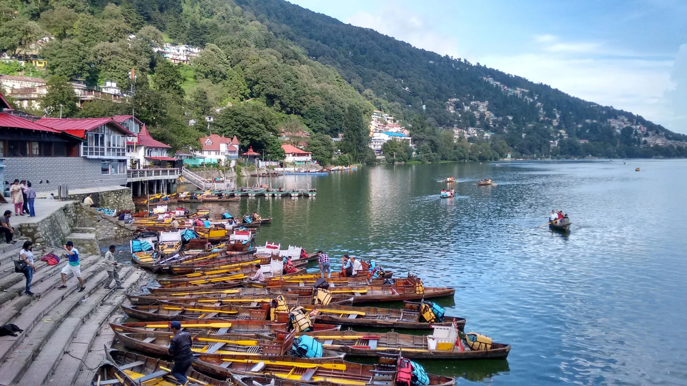
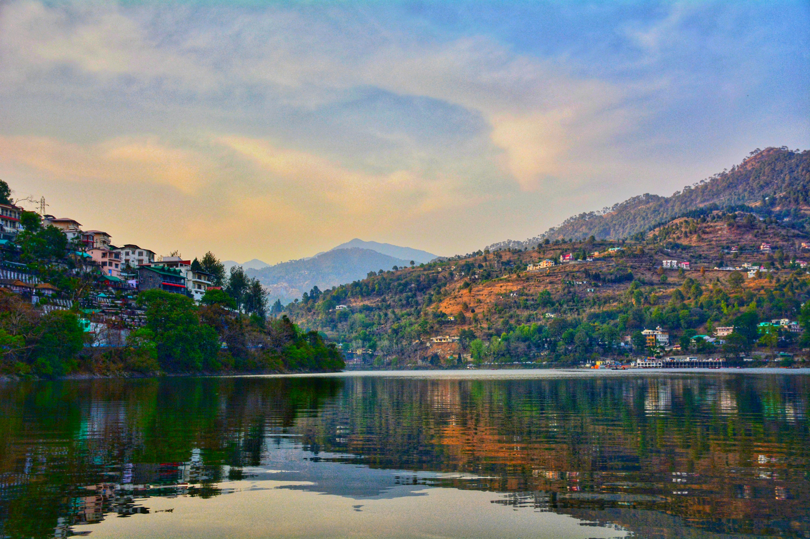
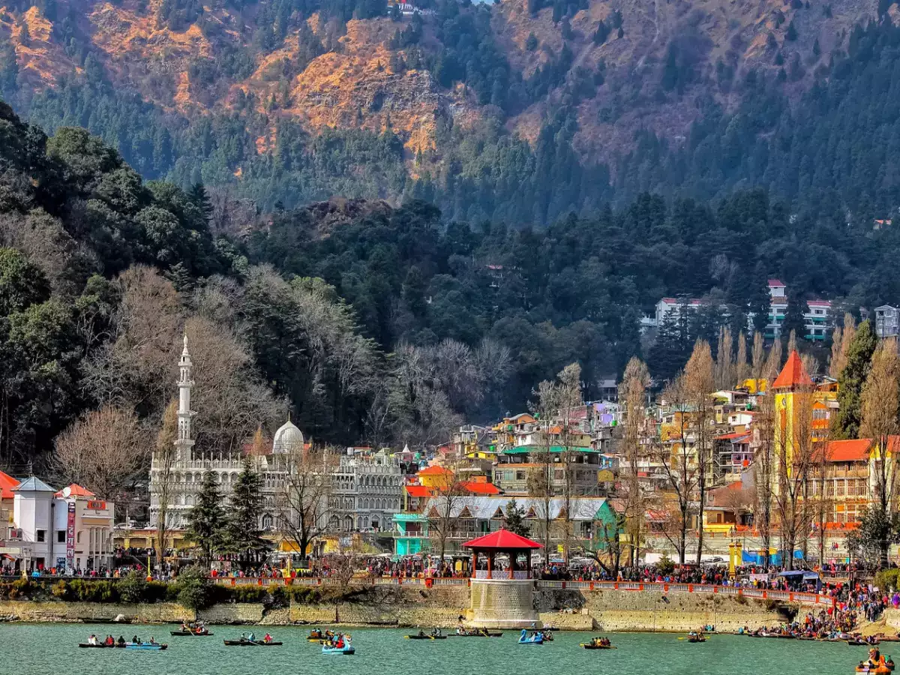
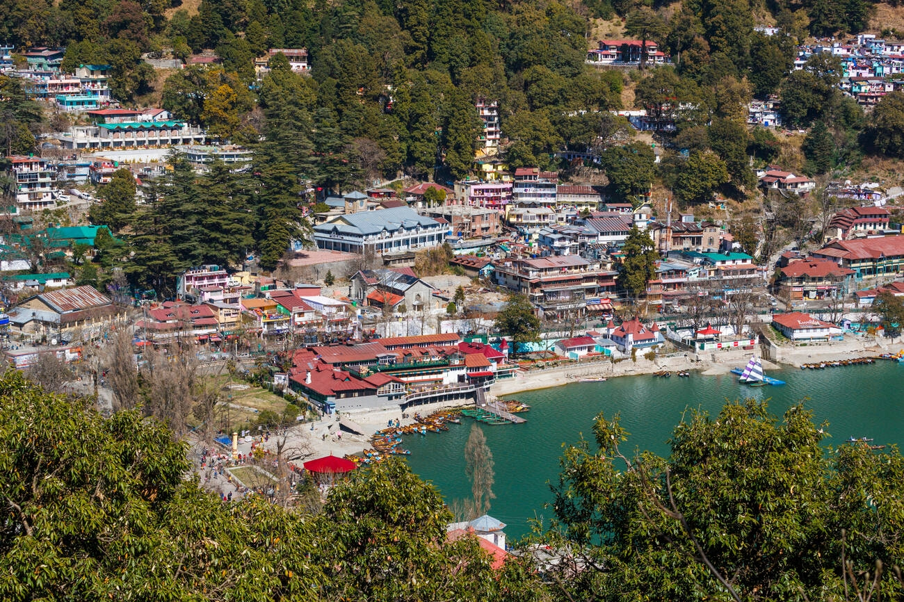

Nestled around the pristine Naini Lake, Nainital is a charming hill station in Uttarakhand, known as the "Lake District of India." Surrounded by lush green hills and offering panoramic views of the Himalayas, Nainital attracts travelers with its serene beauty and pleasant weather.
The town is famous for its colonial heritage, scenic lakes, and vibrant bazaars. Landmarks like the Naini Devi Temple, Snow View Point, and Tiffin Top reflect the town's cultural and natural richness.
Visitors can enjoy boating on Naini Lake, exploring the Mall Road, and soaking in the tranquil atmosphere. Whether you're seeking a romantic getaway, a family vacation, or a solo adventure, Nainital has something for everyone.
Includes 3-day itinerary
Includes 4-day itinerary
Savor the flavors of Bal Mithai, a traditional sweet coated in sugar balls, Bhatt ki Churdkani, a delicious black bean curry, and Ras.

Relish momos, spicy aloo ke gutke (stir-fried potatoes), and roasted bhutta (corn on the cob).
Visit popular bakeries like Sakley’s and Pattie’s for their delectable cakes, pastries, and coffee
Restaurants like Sher-e-Punjab and Machan offer a mix of North Indian, Kumaoni, and international cuisines.


Pantnagar Airport is the nearest airport, located about 65 km from Nainital. Regular flights connect it to major cities.

Kathgodam Railway Station is the nearest railhead, about 34 km from Nainital. It is well-connected to major cities, making train travel a convenient option.

Nainital is accessible via a network of roads. Buses and taxis operate from nearby cities like Delhi, making road travel easy and affordable.

Choose between paddle boats, rowboats, or yachting to enjoy the tranquil waters of the lake. The experience is especially enchanting during sunrise or sunset, with the hills casting their reflection on the water.
Trails like Snow View Point, Tiffin Top, and Land’s End offer varying levels of difficulty and stunning vistas. These treks are a great way to connect with nature and explore the lesser-known corners of Nainital.

Known for their rich biodiversity, these spots are home to over 580 species of birds. Pack your binoculars and a guidebook to make the most of this experience.

Engage in paragliding, zip-lining, and kayaking around Nainital for a thrilling outdoor experience. These activities are perfect for adrenaline junkies.
A bustling hub for tourists, Mall Road is lined with shops selling woolen clothes, handcrafted candles, and souvenirs. Street food stalls and cafes make it a lively spot to explore.
Famous for its fresh produce, jams, and pickles, Bara Bazaar is a must-visit for food enthusiasts. The local organic honey and spices are highly recommended.
This vibrant market offers a range of items, from clothing and accessories to traditional Tibetan artifacts. Bargaining is common here, so hone your skills!
Look for intricately carved wooden items, hand-knit woolens, and aromatic herbal teas that reflect the region’s craftsmanship.